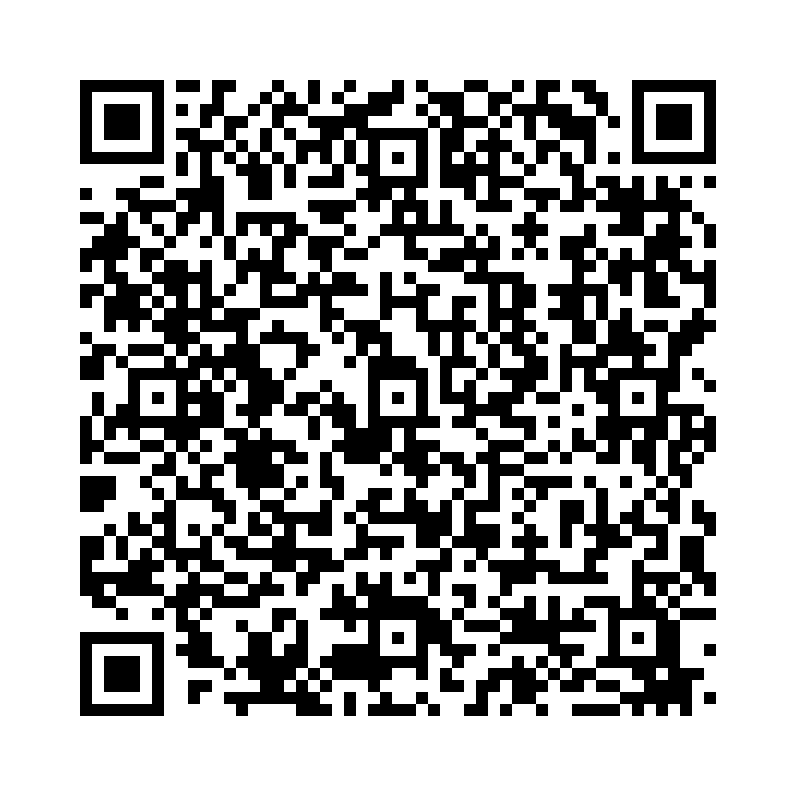

What は「何」を尋ねる疑問詞です。 以下の3つの形式で使用されます：
例文：
以下の単語を並び替えて正しい文を作成しましょう。（和訳を参考にしてください）

問題1: (what / your / favorite / is / color / ?) - あなたの好きな色は何ですか？
解答: What is your favorite color?
解説: 「What + be動詞」を使用して、好きな色を尋ねる文を作ります。
問題2: (do / what / you / want / to eat / ?) - あなたは何を食べたいですか？
解答: What do you want to eat?
解説: 「What + Do + S + V」を用いて、動作対象を尋ねる疑問文を作ります。
問題3: (what / they / will / do / tomorrow / ?) - 彼らは明日何をする予定ですか？
解答: What will they do tomorrow?
解説: 「What + 助動詞 + S + V」を用いて、未来の行動を尋ねる文を作ります。
問題4: (the table / is / on / what / ?) - テーブルの上には何がありますか？
解答: What is on the table?
解説: 「What + be動詞」を使用し、テーブル上の物を尋ねる文を作ります。
問題5: (can / what / see / from / you / here / ?) - ここから何が見えますか？
解答: What can you see from here?
解説: 「What + 助動詞 + S + V」を用いて、視覚的に見えるものを尋ねます。